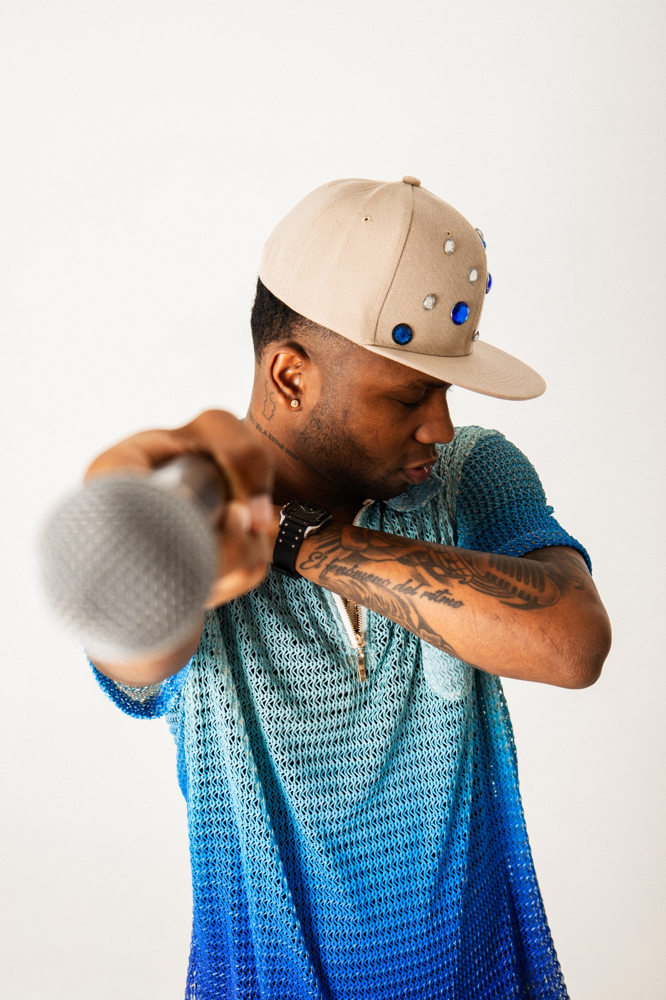
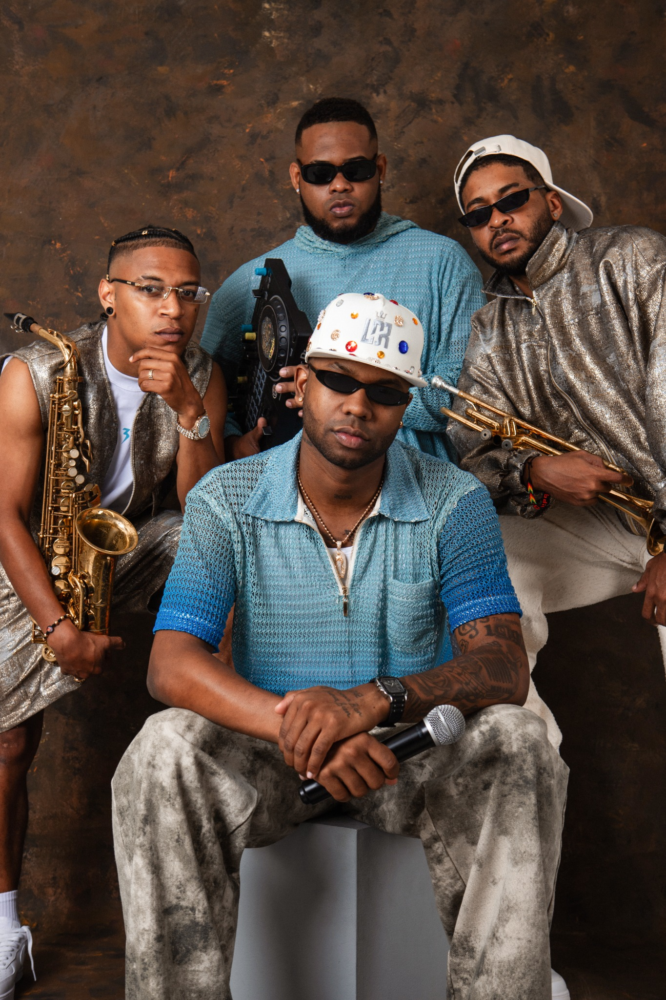

Luigy Boy
Cantautor, productor y cofundador. Voz principal y figura de coraje de la agrupación.
Historia, identidad y recorrido
Los Dioses del Ritmo son una agrupación nacida del sabor chocoano, la energía urbana y la fuerza creativa de una generación que convierte el barrio, la moda, los instrumentos y la fiesta en identidad cultural. Desde Quibdó y Medellín proyectan el Ritmo Exótico como una propuesta musical hecha para conectar comunidad, territorio y escena digital.

Biografía
La agrupación representa una marca musical con raíz social: su música no solo entretiene, también comunica pertenencia, orgullo por el Pacífico colombiano y una forma joven de contar el Chocó desde el baile, los sonidos populares y la cultura urbana.
Ritmo exótico Chocó Comunidad Cultura urbanaIntegrantes
Cada integrante aporta una dimensión distinta al proyecto: voz, producción, vientos, presencia en vivo y conexión con el público.
Cantautor, productor y cofundador. Voz principal y figura de coraje de la agrupación.
Músico, cantautor y cofundador. Rey de los vientos y uno de los perfiles más versátiles.
Músico y productor. Da brillo a la banda con melodías de trompeta y conexión cultural.
DJ, productor y pionero del Ritmo Exótico. Encargado de ritmos e instrumentales en vivo.
Trayectoria
Desde 2019, Los Dioses del Ritmo vienen construyendo una propuesta reconocible en plataformas como TikTok, Spotify y YouTube. Su recorrido combina trabajo musical, presencia digital, colaboraciones, retos virales y participación en escenarios nacionales e internacionales.

Línea de tiempo
Nace el proyecto en barrios y discotecas de Medellín; se consolida el grupo y llegan los primeros lanzamientos.
Durante la pandemia intensifican la producción musical, mantienen conexión digital con el público y participan en Festi-Afro.
“Alo Michael (Rico Rico)” se viraliza en TikTok y abre puertas a giras de medios en México, República Dominicana y Estados Unidos.
Consolidación de colaboraciones, premios y crecimiento del Ritmo Exótico como identidad musical.
Presentación internacional en SXSW, Austin, Texas, ampliando la proyección global del proyecto.
Inicio del proyecto
Visualizaciones del #RicoRicoChallenge
Álbum de estudio
Proyección internacional

Propósito digital
Al unir Biografía y Trayectoria, la página queda más clara para el visitante: primero presenta quiénes son Los Dioses del Ritmo, luego muestra sus integrantes, su evolución y sus logros más importantes. Esto evita duplicar contenido y mejora la navegación del sitio.
Biografía Trayectoria Identidad Proyección